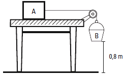
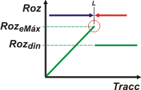

| |
NO ME SALEN
PROBLEMAS RESUELTOS DE FÍSICA DEL CBC
Rozamiento |
|
|

|
| |
2.2.a- Se realiza el experimento siguiente: se arma el sistema de la figura donde el bloque
A de 2 kg está y permanece en reposo sobre
la mesa horizontal. Se va echando arena en el
balde B, de modo que en cierto instante se rompe
el equilibrio, y el sistema se acelera. Sabiendo
que en B se ha totalizado una masa de 1,2 kg
y que tarda 0,8 segundos en llegar al piso, hallar
los coeficientes de rozamiento entre el bloque A
y la mesa, despreciando la masa de la cuerda y
los rozamientos en la polea.
|
|  |
Este ejercicio -y el siguiente- es fundamental para comprender la fuerza de rozamiento. Ambos contienen una dificultad que te va a aparecer decenas de veces; se trata de comprender una situación límite: cuando la fuerza de rozamiento estática alcanza su valor máximo. Ya verás. Yo te aviso cuando llega ese momento crucial. |
|
|
El ejercicio -si lo leés detenidamente- contiene dos momentos. El primero es estático: mientras se va cargando el balde de arena, el sistema no se mueve. El segundo es dinámico: hay un instante en que agregás un último granito de arena en el que el sistema rompe su equilibrio y comienza a desplazarse. Ese último granito de arena es maldito, pero como todo granito de arena tiene una masa de 0,000... gramos.
Como en todos los ejercicios de dinámica, hay que empezar por por confeccionar los DCL. Como hay dos cuerpos, marchen dos DCLs. |
|
|
 |
Espero que estemos de acuerdo. Sobre el bloque A operan cuatro fuerzas: su peso, PA, el apoyo sobre la mesa, N, la fuerza de rozamiento que impide que deslice, Roz, y la fuerza con la que tira la soga, T. Sobre el balde operan apenas dos fuerzas: su propio peso, PB, y la fuerza que le hace la soga, T.
Fijate cómo elegí -apropiadamente- los sistemas de referencia para cada cuerpo (con esta elección el ejercicio es más sencillo; con cualquier otra, el ejercicio igualmente debe salir).
Como la soga es ideal (sin masa), la fuerza que realiza en ambos extremos (sobre el bloque y sobre el balde) son iguales, por ese le puse el mismo nombre, T.
En todos los ejercicios de dinámica pasa lo mismo: después de realizar los DCL, tenés que escribir las ecuaciones de Newton: |
|
|
|
Empecemos con el bloque.
ΣFx = mA ax → T — Roz = mA ax
ΣFy = mA ay → N — PA = 0
Y seguimos con el balde.
ΣFx = mB ax → PB — T = mB ax
Te habrás fijado dos cosas: primero la aceleración vertical del bloque vale 0. No necesito explicártelo. Segundo que, siendo la soga ideal (inextensible) la aceleración en el sentido del movimiento para ambos cuerpos debe valer lo mismo y por eso le puse el mismo nombre, ax.
Y ahora viene el momento crucial. Prestá atención. En la primera parte del ejercicio (la parte estática) esa aceleración también vale 0.
Vos podrás protestar y decir que ya le pusiste suficiente arena al balde como para que el sistema se mueva... pero esperá: no coloques el último granito de arena... el sistema todavía está en reposo, y el rozamiento es estático. Y es el máximo, que vale RozeMáx = μe . N. |
|
|
|  |
Acordate del gráfico que te presenté en el apunte teórico de rozamiento. Acá la fuerza de tracción es la fuerza de la soga, T, que va aumentando a medida que echás arena al balde. Al mismo tiempo va aumetando la fuerza de rozamiento estática hasta que alcanza un valor máximo. Antes o después de echar ese granito maldito de arena estás en el mismo punto límite (L). Granito más, granito menos, juntaste 1,2 kg de arena. |
|
|
|
Nuestras ecuaciones se modifican un poco y quedan así:
T — RozeMáx = 0
N — PA = 0
PB — T = 0
RozeMáx = μe . N
Si contás bien, tenemos 4 ecuaciones con 4 incógnitas de las cuales una de ellas es μe. Es demasiado fácil, así que sólo te doy el resultado.
μe = mB / mA
μe = 1,2 kg /2 kg
|
|
|
|
|
|
Bueno, ahora sí colocá el último granito de arena y que el equilibrio se rompa. A partir de ahora el rozamiento será dinámico y la aceleración será distinta de 0. El enunciado ofrece datos cinemáticos suficientes como para hallar esa aceleración. Te lo hago sin preámbulos:
0,8 m = ½ . ax . (0,8 s)²
ax = 2,5 m/s²
Entonces sí, con este hallazgo volvemos a la dinámica. Ahora las ecuaciones son éstas:
T — Rozd = mA . ax
N — PA = 0
PB — T = mB . ax
Rozd = μd . N
Operamos y despejamos μd... Sumo miembro a miembro la primera con la tercera:
PB — Rozd = mA . ax + mB . ax
Reemplazo el rozamiento con la cuerta y la normal (de la cuarta) con la segunda:
mB . g — μd . mA . g = (mA + mB ) . ax
μd = (mB g — (mA + mB) . ax ) / mA g
μd = (1,2 kg 10 m/s² — (2 kg + 1,2 kg) . 2,5 m/s²) / 2 kg 10 m/s²
|
|
|
|
|
 |
| Este ejercicio -en el original- tiene unas partes b y c enganchadas. La c es una vuelta más de tuerca a esta misma de acá, te la dejo a vos. La b es muy importante. No dejes de resolverlas. |
|
| DESAFIO: ¿Cuánto vale la tensión de la soga en cada caso (estático y dinámico)? |
|
| Algunos derechos reservados.
Se permite mimeografiarlo (?) citando la fuente. Última actualización mar-11. Buenos Aires, Argentina. |
|
|
|